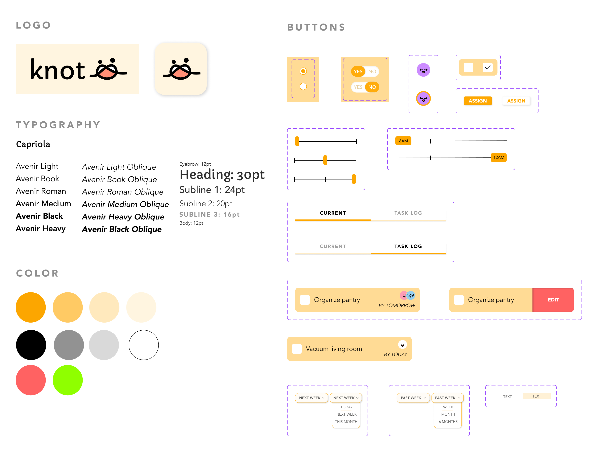

During my first design course at Brown, my team of five, including July Qi,
Fiona Liu, Natalie Zhu, Ivy Zhang, and myself, embarked on a group project.
This case study showcases our combined efforts from
addressing the challenges faced by the 18 million college students entering
college with roommates. Young adults sharing living spaces often encounter
communication and management difficulties, leading to misunderstandings
and negative impacts on academic performance and mental health. To tackle
this issue, our app serves as a communication platform that streamlines
requests and task management among roommates.
I. USER RESEARCH
My team and I began by conducting individual user interviews and
sending out a survey to our communities, focusing on collecting
anecdotes in order to understand the individual’s experience.
KEY OBSERVATIONS
üôá Trends in Communication
Users reported having frequent communication in general,
but when it came to discussing habits, communication was
low. The reasons for this were twofold: Firstly, users
felt that they already knew their roommate's habits, and
secondly, they wanted to avoid potential conflicts or confrontations.
üé® Motivation
Users expressed not specifying boundaries before moving in due
to being previously friends with their roommates or feeling that it was awkward.
II. USER PERSONAS
From our interviews and survey results, we developed two extreme user types.
III. LOW FIDELITY MOCKUP
Each of our group members created an initial sketch in order
to brainstorm all the different possibilities for our screens.
We later went on to
FINALIZING SKETCHES
We then went through a second iteration of sketches and finalized
them into 5 main screens: Home, Schedule, Requests, Tasks, and Profile.
IV. STORYBOARDING
Building upon our initial sketches, we developed a storyboard showcasing
both of our personas and illustrating how our app could potentially impact their experiences.
V. LOW FIDELITY MOCKUP & RESPONSIVE DESIGN
Our team then went on to create our first iteration
of our low fidelity wireframes for each of our screens.
VI. Style Guide

VII. High Fidelity Mockup & Prototype
We then went on to create a hi-fi mockup of all our
screens following our style guide.
VIII. User Testing
With our high fidelity prototype, we conducted four user tests on our peers,
making changes based on the feedback we received.
MAJOR IMPROVEMENTS
üì¢ Popup Clarification
Users were often confused about where Tasks and Requests went after
taking an action like accepting or declining. To address this, we
added a popup that informs users about the destination after they take action.
üóÇÔ∏è Categorization Improvement
Users expressed their desire for clearer differentiation between requests and tasks.
To address this, we gave users the opportunity to categorize a request as task or reminder.
üí¨ Icon Redesign
We discovered that the mental models of the requests icon were
not aligned with our conceptual models. As a result, we redesigned
the icon from the bell a chat to symbolize the "voicing out" needs
and communication.